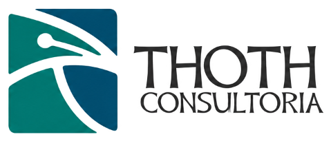

Muitas empresas trabalham duro, investem e se esforçam — mas os resultados não acompanham. A Thoth Consultoria existe para mudar isso. Somos uma consultoria empresarial focada em resultados tangíveis, clareza operacional e crescimento sustentável, com metodologia Lean Six Sigma e uma promessa simples: resultados visíveis em 90 dias.
A Thoth transforma desafios de negócio em organizações de alta performance. Nosso trabalho começa com um diagnóstico objetivo da sua operação — identificando onde o dinheiro está vazando, por que os indicadores não evoluem e o que trava o crescimento. A partir daí, estruturamos melhorias de processos, capacitamos times e implementamos soluções que geram resultado real, não relatório de gaveta.
Atuamos em consultoria de processos e melhoria contínua (Lean Six Sigma), gestão da cadeia de suprimentos, desenvolvimento organizacional, compliance, estratégia de mercado e formação de líderes — sempre com foco na aplicação imediata no dia a dia da empresa.
Retrabalho, refugo, espera e superprodução são desperdícios que você sabe que existem, mas não consegue quantificar. Nós quantificamos — e eliminamos.
Produtividade, qualidade, prazo e custo que não saem do lugar, mesmo com esforço e investimento constantes. Nós destravamos.
O mesmo defeito, a mesma falha, o mesmo atraso. A dor não é o problema — é a recorrência. Nós atacamos a causa raiz, não o sintoma.
Quando a operação não entrega de forma consistente, o cliente percebe e o contrato se perde. Nós construímos capabilidade.
Diagnóstico gratuito de 45 minutos
O primeiro passo é simples: um diagnóstico gratuito com um dos nossos sócios. Sem compromisso — apenas clareza sobre o próximo passo da sua empresa.
Fale com a gente →